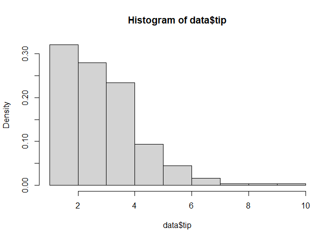
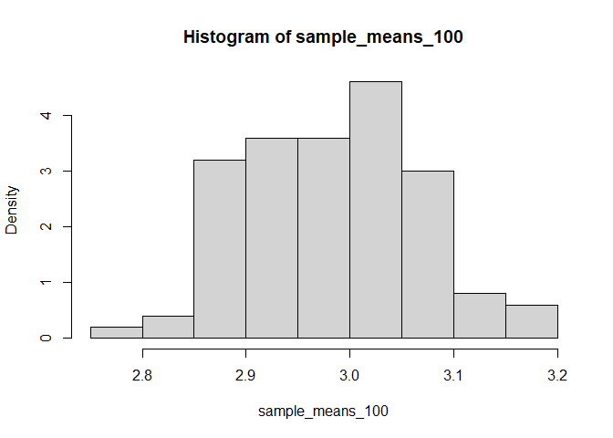
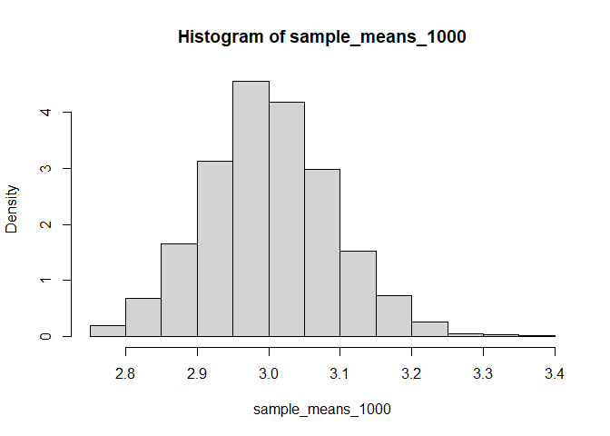
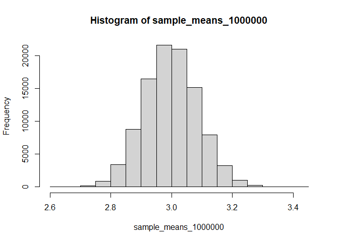

library(reshape2)
library(tidyverse)
library(boot)
library(knitr)
data <- tips
summary(data)
## total_bill tip sex smoker day time
## Min. : 3.07 Min. : 1.000 Female: 87 No :151 Fri :19 Dinner:176
## 1st Qu.:13.35 1st Qu.: 2.000 Male :157 Yes: 93 Sat :87 Lunch : 68
## Median :17.80 Median : 2.900 Sun :76
## Mean :19.79 Mean : 2.998 Thur:62
## 3rd Qu.:24.13 3rd Qu.: 3.562
## Max. :50.81 Max. :10.000
## size
## Min. :1.00
## 1st Qu.:2.00
## Median :2.00
## Mean :2.57
## 3rd Qu.:3.00
## Max. :6.00
Including Plots
You can also embed plots, for example:

results <- data.frame()
results[1,1] <- "1"
results[1,2] <- mean(slice_sample(data, n=100, replace=TRUE)$tip)
results[2,1] <- "2"
results[2,2] <- mean(slice_sample(data, n=100, replace=TRUE)$tip)
results[3,1] <- "3"
results[3,2] <- mean(slice_sample(data, n=100, replace=TRUE)$tip)
colnames(results) <- c("Sample #", "Sample Mean")
results
## Sample # Sample Mean
## 1 1 3.1151
## 2 2 2.9017
## 3 3 2.8694
set.seed(3)
sample_means_100 = vector()
for (i in 1:100) {
sample_means_100[i] <- mean(slice_sample(data, prop=1, replace=TRUE)$tip)
}
hist(sample_means_100, freq=FALSE)

sample_means_1000 = vector()
for (i in 1:1000) {
sample_means_1000[i] <- mean(slice_sample(data, prop=1, replace=TRUE)$tip)
}
hist(sample_means_1000, freq=FALSE)

bootstrap_func <- function(data_, i){
return(mean(data_[i, ]$tip))
}
paste("For Loop")
## [1] "For Loop"
sample_means_1000 = vector()
system.time(
for (i in 1:1000) {
sample_means_1000[i] <- mean(slice_sample(data, prop=1, replace=TRUE)$tip)
}
)
## user system elapsed
## 2.13 0.00 2.16
paste("Function (from `boot`)")
## [1] "Function (from `boot`)"
system.time(
sample_means_boot <- boot(data,bootstrap_func,R=1000)
)
## user system elapsed
## 0.30 0.01 0.31
sample_means_boot <- boot(data,bootstrap_func,R=100000)
sample_means_1000000 <- sample_means_boot$t
hist(sample_means_1000000)

(max(sample_means_1000000) - mean(sample_means_1000000)) / sd(sample_means_1000000)
## [1] 4.615244
(min(sample_means_1000000) - mean(sample_means_1000000)) / sd(sample_means_1000000)
## [1] -4.123977